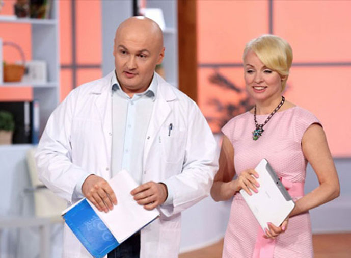

”De la obezitate la anorexie este doar un pas”
Amalia Popescu: Bună ziua, dragii mei! Astăzi vom vorbi despre ce consecințe poate avea lupta împotriva kilogramelor în plus.
Amalia Popescu: În ultima vreme a devenit tot mai popular un remediu pentru slăbit, și anume bicarbonatul de sodiu . Astăzi vom vorbi anume despre proprietățile acestui produs. Dacă bicarbonatul de sodiu ajută într-adevăr în lupta pentru un corp suplu. Și ne va ajuta să clarificăm toate aceste lucruri domnul Dumitru Alexe, doctor în științe medicale și nutriționist.
Dumitru Alexe: Mulți consideră că slăbirea cu bicarbonatul de sodiu nu este posibilă. Însă, de fapt, totul poate fi explicat foarte simplu - bicarbonatul de sodiu elimină toxinele din organism și favorizează descompunerea grăsimilor. Aceasta ajută într-adevăr în procesul de pierdere în greutate. Însă! În primul rând, cu bicarbonatul de sodiu nu se pot pierde mai mult de 4-5 kg pe lună , iar în al doilea rând, pentru aceasta trebuie să vă schimbați foarte mult obiceiurile alimentare, și stilul de viață în general.
Amalia Popescu: Aceasta înseamnă că bicarbonatul de sodiu, în ciuda părerii răspândite, nu este cel mai bun remediu în lupta cu obezitatea?
Dumitru Alexe: Bineînțeles că nu. Dacă vă aduceți aminte, nu cu mult timp în urmă, la emisiune a venit profesorul în nutriție, domnul Cristian Vulpe, cu care am discutat despre remediul pentru slăbit .
Amalia Popescu: Da, însă după această emisiune a început ceva de neînchipuit. Din nefericire, multe telespectatoare nu au folosit cum trebuie unele sfaturi din discuția noastră, fapt ce a dus la consecințe negative.
Dumitru Alexe: După câte înțeleg, este vorba despre anorexie în urma administrării preparatului .
Amalia Popescu: Exact! De obicei, cauza anorexiei o constituie dietele cu care se chinuiesc fetele în speranța că vor slăbi. Dar, după cum s-a dovedit, aceasta nu este singura cauză.
După cum știți deja, la câteva luni după ediția noastră despre arzătorul de grăsimi . am început să primim reclamații de la femeile care au slăbit enorm, și care nu știau ce să facă cu corpul lor istovit.
Dumitru Alexe: Da, totul este din cauza faptului că ste cel mai puternic arzător de grăsime natural care există în momentul de față în dietetică. Și bineînțeles că nici un bicarbonat de sodiu nu se compară cu acesta. Măcar din motivul că slăbirea cu u necesită schimbarea stilului de viață, și, totodată, nu se pierd numai 4-5 kg, ci 12-16 într-o lună!
Amalia Popescu: Exact! Însă multe femei nu au luat în seamă această particularitate a preparatului. Luând au decis că, dacă vor mai ține și dietă, atunci efectul va fi mai puternic. De altfel așa s-a și întâmplat. În final, femeile care aveau câte 100-120 kg s-au transformat efectiv în 60 de zile în niște anorectice de 30 de kg. Este foarte trist să aud că și-au făcut mai mult rău cu un asemenea remediu eficient. Dar aș vrea totuși să înțeleg ce anume dă un asemenea efect?
Dumitru Alexe: O întrebare foarte bună. Și aș vrea să mă opresc asupra ei și să explic în detaliu.
Amalia Popescu: Într-adevăr, proprietățile acestui preparat sunt pur și simplu impresionante. Dar în ce constă, după părerea dumneavoastră, pericolul pentru dragile noastre telespectatoare?
Dumitru Alexe: Suntem siguri că principalul pericol sunt dietele. Folosind nu e nevoie să se țină diete, deoarece și așa depozitele de grăsime vor dispărea. Organismul are nevoie de substanțe utile, pe care le primește din hrană. Un alt pericol este faptul că, atunci când slăbesc ușor și repede, mulți, scuzați-mi expresia, ”o iau razna”. Lor întotdeauna li se pare că au slăbit prea puține kilograme, deoarece înainte niciodată nu au slăbit atât de repede. Și conștientizează acest lucru prea târziu, din păcate.
Amalia Popescu: Domnule Dumitru Alexe, sunt întru totul de acord cu dumneavoastră, și cu această problemă se confruntă acum tot mai multe femei. Și totuși, ce ați dori să le sfătuiți pe telespectatoarele noastre, ce să facă?
Dumitru Alexe: Poate că cea mai eficientă metodă în acest caz ar fi stabilirea obiectivului: decideți mai întâi până la ce greutate vreți să slăbiți. De exemplu aveți 80 kg și v-ar conveni să aveți 55 kg. Pentru îndeplinirea acestui obiectiv aveți nevoie de un tratament de 3 săptămâni cu nu mai mult! Așa că luați preparatului exact o lună, mâncați ce doriți, iar când cântarul indică 55 încetați administrarea preparatului. În felul acesta vă veți realiza obiectivul propus și nu veți întrece măsura. Puteți și trebuie să vă hrăniți ca de obicei, diversificat și să consumați o cantitate care să nu vă producă disconfortul produs de foame. De la preparatul eți slăbi oricum, dietele sunt aici de prisos.
Amalia Popescu: Am primit de asemenea informația că pe piață deja au apărut produsele contrafăcute. Domnule Dumitru Alexe, de unde se poate cumpăra produsul adevărat și cum să ne ferim de cumpărarea unui produs fals?
Dumitru Alexe: Preparatul primit certificarea în România, iar cel mai sigur mod de a-l achiziționa, până la apariția în farmacii, este de a-l comanda de pe site-ul oficial al furnizorului
Amalia Popescu: A rămas doar să le urăm tuturor sănătate și să țină minte că datorită medicinei contemporane multe probleme se rezolvă mult mai ușor și mai eficient. Iar ste un exemplu grăitor în acest sens. Pentru cei ce doresc să slăbească, rețineți două principii fundamenatale. Primul - ca să slăbiți nu este obligatoriu să vă înfometați! Iar al doilea - ca să slăbiți, este mai bine totuși să luați . Viața este minunată!
Atenție!
S-au înmulțit cazurile de vânzare a produsului contrafăcut care nu are proprietăți curative! De aceea, special pentru telespectatorii și cititorii noștri, afișăm butonul pentru a comanda remediul de la singurul furnizor oficial. Făcând comanda aici, veți primi garantat produsul de calitate cu reducere de 50%! Pur și simplu apăsați pe butonul ”Intrați pe site-ul furnizorului” mai jos. Veți ajunge pe site-ul oficial, unde veți putea face comanda.
Până la (inclusiv), se desfășoară o campanie promoțională în cadrul căreia puteți cumpăra cu o reducere de 50%! Puteți comanda apăsând pe butonul de mai jos. Cantitatea de cutii la promoție este limitată!
Amalia Popescu, emisiunea ”Viața este minunată!”.
Salut! Și eu la început am slăbit cu bicarbonat de sodiu, apoi am înțeles că nu este cea mai eficientă metodă de slăbit și am încercat . Doar că atunci la noi nimeni nu știa despre el, mie sora mi l-a adus din China. Ce să spun, nici măcar nu visam la un asemenea rezultat! În doar 2 săptămâni și ceva am putut să slăbesc 13 kg!!! Nu am reușit să slăbesc așa cu nici o dietă!

Dana Mutu:
Mie medicii mi-au spus că trebuie să slăbesc 13-15 kg înainte de sarcină. Analizând comentariile, consider că este singura mea șansă. Am încredere în doamna Popescu, dacă ea spune că se poate slăbi cu înseamnă că așa este. Cel mai important este să nu exagerezi!)))
Au trecut 3 săptămâni din momentul în care am primit la poștă coletul cu . Am slăbit 25,5 kg. Am început de la greutatea de 93 kg, acum am 67,5. Sunt foarte mulțumită, dar voi mai comanda, pentru a ajunge la 57 kg (este greutatea mea ideală). Îl recomand cu căldură tuturor celor ce nu reușesc nicium să slăbească!
Acest ste o adevărată minune! Ce bicarbonat de sodiu?! Cu el poți să slăbești doar 3-4 kg pe lună. Însă cu m slăbit mai mult de 17 kg! Fără nici o dietă!!!

Elena:
Și au am încercat produsul rezultatul meu în 4 săptămâni este de minus 17 kg!!! N-aș fi crezut niciodată așa ceva, dacă nu mi s-ar fi întâmplat mie. Îi mulțumesc foarte mult doamnei Amalia Popescu și co-prezentatorului ei că au spus tuturor despre acest preparat, căci sunt foarte multe femei care visează să slăbească.
Îi mulțumesc doamnei Amalia pentru emisiune și pentru link-ul site-ului pentru comandă, măcar nu trebuie să caut site-ul unde se vinde produsul original. Și, în plus, promoția este avantajoasă!
Cu ajutorul bicarbonatului de sodiu am slăbit doar 2,5 kg într-o lună. Însă totodată a crescut aciditatea stomacului, apoi a trebuit să trec la altceva. Am ales . Este un remediu excelent pentru slăbit! Și are și reducere de 50%! Dacă ați ști cam care este entuziasmul când te urci dimineața pe cântar și vezi că ai mai puțin cu 1-2 kg!
Confirm faptul că ste o metodă eficientă pentru slăbit. Și eu, și prietena mea am slăbit cu el. Eu am slăbit 19 kg, iar prietena mea 16,5 în mai puțin de o lună! Foarte impresionant!

Elvira:
Și eu vreau un asemenea efect! Oare pentru asta trebuie pur și simplu să iau i pot să nu țin dietă?